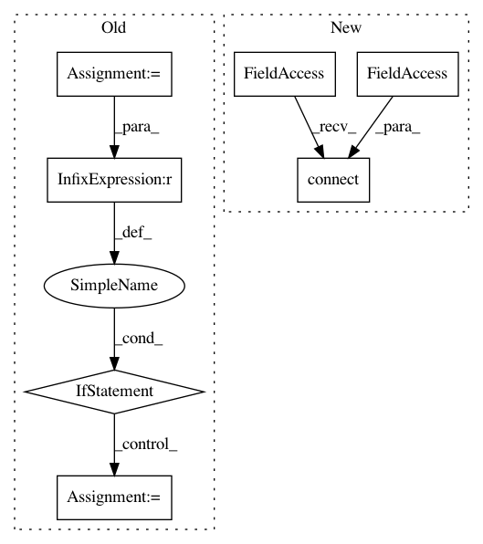

6c331b84293bb6cf5dc5480037d69cc0ffb0c6fe,ilastik/applets/thresholdTwoLevels/thresholdTwoLevelsGui.py,ThresholdTwoLevelsGui,setupLayers,#ThresholdTwoLevelsGui#,189
Before Change
// Show the selected channel
if op.InputChannel.ready():
drange = op.InputChannel.meta.drange
if drange is None:
drange = (0.0, 1.0)
channelSrc = LazyflowSource(op.InputChannel)
//channelLayer = AlphaModulatedLayer( channelSrc,
// tintColor=QColor(self._channelColors[op.Channel.value]),
After Change
for channel in range(numChannels):
channelProvider = OpSingleChannelSelector(parent=op.InputImage.getRealOperator().parent)
channelProvider.Input.connect(op.InputImage)
channelProvider.Index.setValue( channel )
channelSrc = LazyflowSource( channelProvider.Output )
inputChannelLayer = AlphaModulatedLayer( channelSrc,
tintColor=QColor(self._channelColors[channel]),
In pattern: SUPERPATTERN
Frequency: 3
Non-data size: 7
Instances
Project Name: ilastik/ilastik
Commit Name: 6c331b84293bb6cf5dc5480037d69cc0ffb0c6fe
Time: 2013-09-18
Author: martin.schiegg@iwr.uni-heidelberg.de
File Name: ilastik/applets/thresholdTwoLevels/thresholdTwoLevelsGui.py
Class Name: ThresholdTwoLevelsGui
Method Name: setupLayers
Project Name: ilastik/ilastik
Commit Name: 9418883d418ecccd7fe5da4dddffdc01064efb23
Time: 2014-03-26
Author: bergs@janelia.hhmi.org
File Name: ilastik/workflows/carving/splitBodyCarvingWorkflow.py
Class Name: SplitBodyCarvingWorkflow
Method Name: __init__
Project Name: ilastik/ilastik
Commit Name: b71c79b8bb87791082c23837e472d97a7bfab712
Time: 2012-11-16
Author: bergs@janelia.hhmi.org
File Name: ilastik/applets/labeling/labelingGui.py
Class Name: LabelingGui
Method Name: _addNewLabel